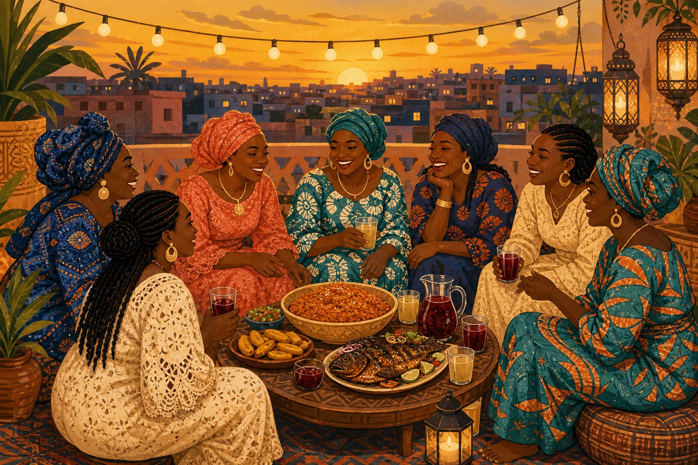

INDÉPENDANCE FINANCIÈRE AU FÉMININ
Mon argent,
ma liberté.
Comment construire l’indépendance financière d’une femme — même pendant les fêtes.
Un guide concret pour comprendre ton argent, développer tes revenus, bâtir une réserve et garder le pouvoir de décider. Les fêtes en sont le point de départ ; ton autonomie, le vrai sujet.
LE SUJET, CLAIREMENT
L’indépendance
financière, pour toi.
Pouvoir comprendre ton argent, développer tes revenus, protéger une réserve et décider de ta vie : voilà le cœur du guide. Aimer ou construire à deux n’efface pas ton droit à une autonomie financière réelle. Les fêtes sont un exemple concret ; le cap, c’est ta liberté économique toute l’année.
LE PARCOURS
Construire
ta liberté.
Des chiffres de départ à ton plan d’autonomie sur 90 jours : comprendre, gagner, protéger et faire grandir tes ressources.
des lieux financier15 min02Reprendre la main
sur ton argent15 min03Budget et réserve
de sécurité20 min04Faire grandir
tes revenus20 min05Tester une activité
viable20 min06Épargner et investir
avec prudence15 min07Garder ton pouvoir
dans le couple15 min08Les fêtes :
un cas concret10 min09Développer tes
protections15 min10Ton plan financier
sur 90 jours20 min
UNE VÉRITÉ À EMPORTER
« L’indépendance, ce n’est pas ne jamais recevoir d’aide. C’est disposer d’options et garder le pouvoir de choisir. »— La boussole de ton autonomie financière
TON GUIDE COMMENCE ICI
À toi, qui veux
choisir.

L’AUTONOMIE SE CONSTRUIT
Ton argent.
Tes choix.
Ton avenir.
À toi qui veux être en mesure de contribuer, de préparer une réserve, de développer ton activité ou de chercher un emploi digne : ta capacité financière compte. Elle se développe par des savoirs, des revenus, des décisions informées et des liens de soutien.
Les fêtes sont un moment de l’année. La liberté de choisir et de subvenir à tes besoins est un projet plus grand, qui mérite des étapes réalistes et un accompagnement adapté à ta situation.
Revenir au débutTON ENGAGEMENT FINANCIER